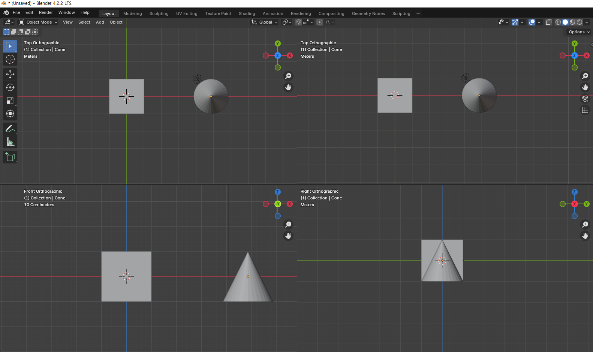
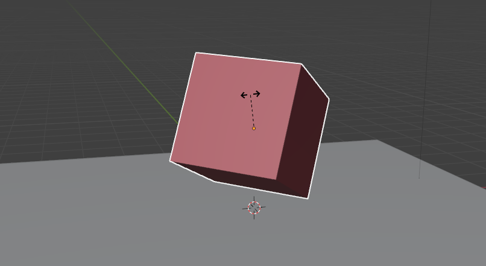
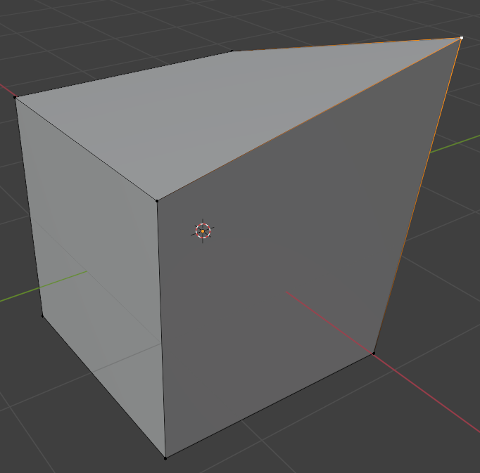
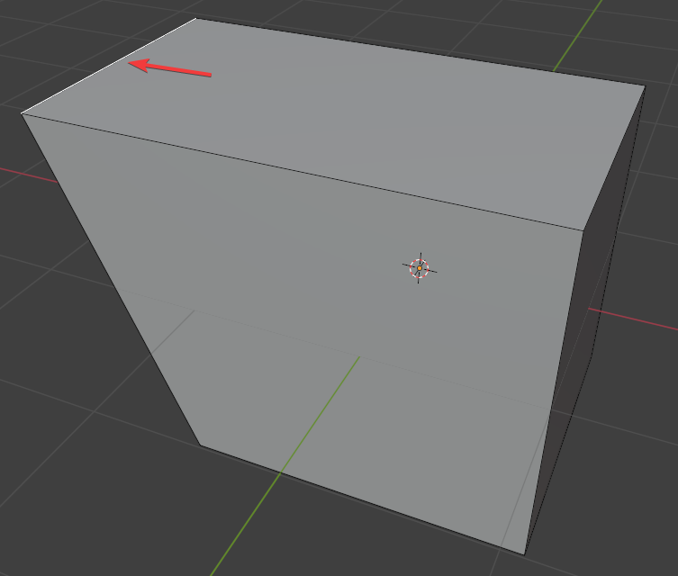
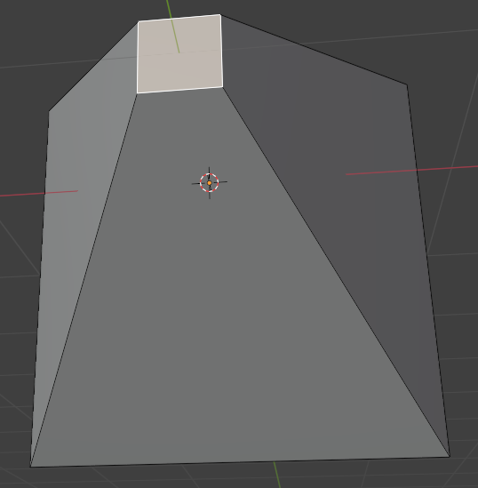
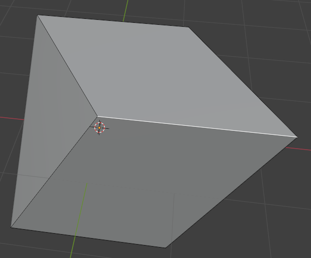
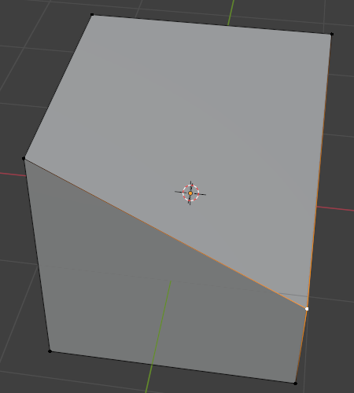

blender 실습 1
1. LMB는 무엇의 약자인가?
- Large Mouse Button
- Left Mouse Button
- Left Move Button
- Light Move Button
2. MMB를 누르라고 적혀 있으면 마우스의 어떤 부분을 눌러야 하나?
- 왼쪽 버튼
- 왼쪽 버튼과 오른쪽 버튼을 동시에
- 마우스 휠
- 오른쪽 버튼
3. cube가 하나 있는 경우 이 큐브를 확인하기 위해 궤도식 회전(orbit)을 하려 한다. 가장 좋은 방법은?
- 왼쪽 버튼으로 화면을 눌러 돌린다.
- shift + 왼쪽 버튼으로 화면을 눌러 돌린다.
- 오른쪽 버튼으로 화면을 눌러 돌린다.
- 마우스 휠로 화면을 눌러 돌린다.
4. 궤도식 회전(orbit)을 하면 어느 한 점을 중심으로 카메라가 일정거리를 두고 회전하게 된다. 이 때 회전 중점을 바꾸고 싶다면 어떻게 해야 하나?
- 원하는 중점에 마우스를 위치하고 MMB를 누른다.
- 원하는 중점에 마우스를 위치하고 Alt + MMB를 누른다.
- 원하는 중점에 마우스를 위치하고 LMB를 누른다.
- 원하는 중점에 마우스를 위치하고 Alt + LMB를 누른다.
5. 현재 화면에서 오른쪽에 반만 보이는 object를 화면 가운데에 보이도록 하고 싶으면 panning을 해야 한다. 패닝하는 방법은?

- MMB를 누른 채로 마우스를 움직인다.
- LMB를 누른 채로 마우스를 움직인다.
- Shift를 누른 상태에서 MMB를 꾹 누르고 (떼지않고) 마우스를 움직인다.
- Shift를 누른 상태에서 LMB를 꾹 누르고 (떼지않고) 마우스를 움직인다.
6. zoom in / zoom out 하는 방법으로 틀린 것은?
- 마우스 휠을 돌린다.
- 숫자 키패드에서 + 키나 - 키를 누른다.
- 마우스 휠을 누르고 움직인다.
- Ctrl + MMB를 하고 마우스를 위아래로 움직인다.
7. 작업하다 보니 많은 수의 mesh들을 만들게 되었다. 이 mesh들과 카메라, 조명까지 모두 한 화면에 표시되도록 zoom out 하는 가장 빠르고 쉬운 방법은?
/키를 누른다..키를 누른다.*키를 누른다.home키를 누른다.
8. 작업하면서 zoom in / out 을 여러 번 하다보니 어느 순간부터 zoom in 이 제대로 안되었다. 이 문제를 가장 빠르게 해결하는 방법은 ?
- zoom in하고 싶은 mesh를 선택하고
/키를 누른다. - zoom in하고 싶은 mesh를 선택하고
.키를 누른다. - zoom in하고 싶은 mesh를 선택하고
*키를 누른다. - zoom in하고 싶은 mesh를 선택하고
home키를 누른다.
9. viewpoint를 설정하는 방법으로 틀린 것은 ?
- Top view: 숫자키패드 7
- Front view: 숫자키패드 5
- Right view: 숫자키패드 3
- Bottom view: Ctrl + 숫자키패드 7
10. Top view로 보고 있다가 반대쪽인 bottom view로 바꾸고 싶거나, Left view로 보고 있다가 반대쪽인 right view로 바꾸고 싶거나, Front view로 보고 있다가 back view로 바꾸고 싶을 때 모든 경우에 한 번에 바꾸는 방법은 ?
숫자키패드 5를 누른다.숫자키패드 9를 누른다.숫자키패드 .을 누른다.숫자키패드 -를 누른다.
11. 다음과 같이 quad view로 전환하는 방법은 ?

ctrl+alt+q를 누른다.ctrl+alt+v를 누른다.ctrl+alt+4를 누른다.ctrl+alt+/를 누른다.
12. 다음 줄 틀린 말은 ?
- perspective: 입체적인 표현을 한다.
- orthographic: 직교투영으로 표현한다.
- perspective: top view, front view, right view에서 사용한다.
- orthographic: 거리와 상관없이 물체의 크기를 똑같이 보여준다.
13. 오브젝트를 이동할 때 사용하는 키는 ?
G키R키A키S키
14. 오브젝트를 이동할 때 y축으로만 이동하려 한다. 이 경우 눌러야 하는 키는 ?
G키X키Y키Z키
15. 오브젝트를 이동할 때 x, y축으로만 이동하고 z축으로의 이동은 제한하려 한다. 이 경우 눌러야 하는 키는 ?
Ctrl+Z키Z키Alt+Z키Shift+Z키
16. 아래 그림과 같이 cube가 회전되어 있을 때 바닥과 평형을 이루도록 하는 방법은 ?

G키를 눌러 회전시킨다.R키를 눌러 회전시킨다.B키를 눌러 회전시킨다.A키를 눌러 회전시킨다.
17. 위 문제의 답과 같이 회전시켰더니 오히려 더 이상한 방향으로 회전되었다. 바닥과 평형을 이루도록 회전시키는 방법은 ?

X키를 눌러 X축을 기준으로 회전시킨다.Y키를 눌러 Y축을 기준으로 회전시킨다.Z키를 눌러 Z축을 기준으로 회전시킨다.- blender는 무료 프로그램이라 이런 문제는 해결할 수 없다.
18. 아래와 같이 눈사람을 만들었는데 아래에 있는 sphere(구)를 좀 더 크게 해주고 싶을 때 사용할 수 있는 방법은 ?

- 아래에 있는 sphere를 선택하고
G키를 눌러 약간 키워준다. - 아래에 있는 sphere를 선택하고
R키를 눌러 약간 키워준다. - 아래에 있는 sphere를 선택하고
S키를 눌러 약간 키워준다. - 아래에 있는 sphere를 선택하고
A키를 눌러 약간 키워준다.
19. 아래와 같이 어느 한 점의 위치를 변경하려 할 때 제일 처음 할 일은 ?

e키를 눌러 edit 모드로 들어간다.ctrl키를 눌러 edit 모드로 들어간다.m키를 눌러 edit 모드로 들어간다.tab키를 눌러 edit 모드로 들어간다.
20. edit 모드 진입 후 아래와 같이 어느 한 점(vertex)의 위치를 변경하려 할 때 할 일은 ?
p키를 눌러 점편집 모드로 변경한다.1키를 눌러 점편집 모드로 변경한다.2키를 눌러 점편집 모드로 변경한다.3키를 눌러 점편집 모드로 변경한다.
21. edit 모드 진입 후 아래와 같이 어느 한 선(edge)의 위치를 변경하려 할 때 할 일은 ?

L키를 눌러 선편집 모드로 변경한다.1키를 눌러 선편집 모드로 변경한다.2키를 눌러 선편집 모드로 변경한다.3키를 눌러 선편집 모드로 변경한다.
22. edit 모드 진입 후 아래와 같이 어느 한 면(face)의 크기를 변경하려 할 때 할 일은 ?

f키를 눌러 면편집 모드로 변경한다.1키를 눌러 면편집 모드로 변경한다.2키를 눌러 면편집 모드로 변경한다.3키를 눌러 면편집 모드로 변경한다.
23. 다음과 같이 작업했을 때 결과물은 ?
1. cube를 선택한다.
2. tab 키를 눌러 edit 모드로 들어간다.
3. 1키를 누른다.
4. 어느 한 점을 선택한다.
5. G키를 누른다.
6. X키를 누른다.
7. 마우스를 움직인다.




24. 다음과 같은 작업결과물을 만드는 작업을 순서대로 기술했다. 이 중 틀린 것은 ?

-
cube를 선택한다.
-
tab키를 눌러 편집 모드로 들어간다.
-
3키를 눌러 면편집 모드로 변경한다. -
r키를 눌러 회전 기능을 활성화한다. -
ctrl + z키를 눌러 z축 회전으로 설정한다. -
마우스를 움직여 선택된 면을 회전한다.
25. 다음 그림과 같은 편집과 방법을 올바르게 짝지은 것은?

- 모따기,
ctrl + v키 - 모깎기,
ctrl + v키 - 모따기,
ctrl + b키 - 모깎기,
ctrl + b키
26. 다음 그림과 같은 편집과 방법을 올바르게 짝지은 것은?

- 모따기, 모깎기 후 마우스 휠
- 모깎기, 모따기 후 마우스 휠
- 모따기, 모깎기 후 마우스 휠
- 모깎기, 모따기 후 마우스 휠
27. 다음 그림과 같이 면을 도출(extrude)할 떄 사용하는 키는?

e키x키t키r키
28. 면을 도출(extrude)시킨 직후 이 작업을 취소하려면 ctrl + z 키를 누른다. 그런데 이 때, ctrl + z 키를 2번 이상 눌러 그 면을 선택한 것까지 취소해야 한다. 그 이유는(답 2개)?
- extrude는 메모리를 많이 차지하는 연산이므로
- extrude는 CPU를 많이 차지하는 연산이라 정확하게 제거하지 않으면 앞으로 CPU를 더 많이 사용하기 때문
- extrude는 면을 하나 더 생성하는 거라 나중에 이 면이 반드시 문제가 되기 때문에 완벽하게 제거하려고.
- extrude하면 바로 그 자리에 똑같은 면이 하나 더 생성되기 때문에 면이 하나 더 있는지 알아보기 어렵기 때문
29. fbx는 무엇의 약자인가?
- 약자가 아니다.
- FaceBook eXtension
- FilmBook eXtension
- FilmBoX